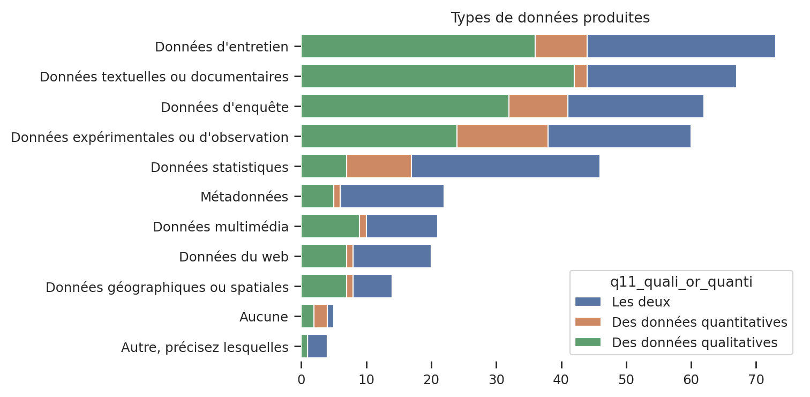
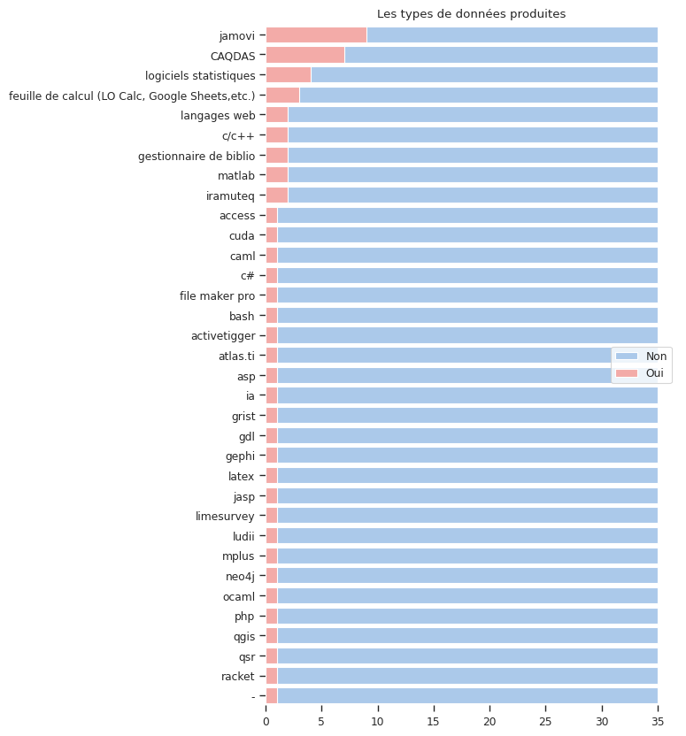

Notebook consacré à l’analyse des questions relatives à la Science Ouverte#
Connaissance et pratique de la Science Ouverte#
Plusieurs questions de l’enquête portent sur les connaissances et les pratiques de la Science Ouverte. La première question demande ainsi aux participants s’ils “sont “familiers des principes de la Science Ouverte”. 57% ont répond “oui, un peu”, 32 “oui, tout à fait” et 10% “non”. Ils sont par ailleurs 40% à avoir déposé plusieurs fois des publications sur Hal, et 35% le font systématiquement.
Principes de la science ouverte |
nb |
freq |
|---|---|---|
Non |
12 |
10.3 |
Oui, tout à fait |
38 |
32.5 |
Oui, un peu |
67 |
57.3 |
117 |
100.0 |
q2_hal_depot |
nb |
total |
freq |
|---|---|---|---|
Non |
15 |
117 |
12.8 |
Oui, plusieurs fois |
47 |
117 |
40.2 |
Oui, systématiquement |
41 |
117 |
35.0 |
Oui, une fois |
14 |
117 |
12.0 |
q4_diff_data |
nb |
total |
freq |
|---|---|---|---|
Autre, précisez |
25 |
117 |
21.4 |
Non |
84 |
117 |
71.8 |
Oui, sur Data Paris 8 |
1 |
117 |
0.9 |
Oui, sur Nakala |
3 |
117 |
2.6 |
Oui, sur Zenodo, Nakala |
4 |
117 |
3.5 |
En ce qui concerne l’ouverture des données, 72% des personnes interrogées ne l’ont jamais fait. ParmiScience les 28% personnes restantes, 6% d’entre elles ont utilisé au moins une fois des entrepôts généralistes comme Data Paris 8 et Nakala ont été utilisés. parmi les autres moyens de diffusion utilisés, 10 personnes utilisent Open Science Framework (OSF), 6 mettent leurs données sur le site web personnel et 3 les entreposent sur un dépôt “git”. On observe également que 3 répondent déposent leurs données sur les entrepots spécialisés, liés à la linguistiques, Ortolang et Cocoon.

Enfin, un peu moins de 10% des personnes interrogées ont déjà déposé des productions sur Octaviana. Ces productions sont des captations d’événements pour trois d’entre elles et des travaux universitaires et des publications pour les huit autres. Par ailleurs seules 9 personnes sur les 91 n’ayant jamais déposé de production sur Octaviana ont précisé qu’elles ne connaissaient pas la bibliothèque numérique. En tout une personne sur cinq n’en a jamais entendu parlé.
Les autres modes de dépôt des données de recherche#
Production et analyse des données#
Types de données produites#
Les personnes interrogées travaillant exclusivement avec des données dites “quantitatives” sont minoritaires, près de la moitié s’appuient essentiellement sur des données qualitatives et environ un tiers manipulent les deux types de données.
q11_quali_or_quanti |
nb |
freq |
|---|---|---|
Des données qualitatives |
56 |
47.9 |
Des données quantitatives |
19 |
16.2 |
Les deux |
42 |
35.9 |
Total |
117 |
100.0 |
Les quatre types de données les plus fréquemment produites sont les entretiens, les données textuelles, les données d’enquête et les données expérimentales ou d’observation. On notera toutefois le caractère ambigü de certaines catégories. Ainsi la notion d‘“enquête” est largement utilisé en sciences sociales pour désigner la partie empirique des recherche et renvoie aussi bien aux méthodes d’enquêtes ethnographiques qu’aux méthodes d’enquêtes par questionnaire. De même, les données d’observation peuvent se comprendre au sens de l’anthropologue qui observe les interactions au sein d’un groupe humain ou de l’ornithologue qui compte les espèces d’oiseau. Parmi les “autres types de données”, une personne a d’ailleurs précisé qu’il s’agissait d “observations in situ non expérimentales”. Tandis qu’une autre ne se reconnait pas dans la notion de “donnée”.

for x in df0.q10_other_type_data.loc[~df0.q10_other_type_data.isna()]:
print(x)
Observations in situ non expérimentales
Images
données orales, multimodales et visuo-gestuelles
pourquoi ce terme de "données" hérité des sciences dures et qui ne recoupe pas le travail dans la plupart des humanités ou dont je n'ai pas envie de me servir pour décrire ma recherche + désambiguisez tous les acronymes cf TGIR
Outils de traitement#
gb_data1
| nb | total | freq | total_freq | logiciel_traitement | |
|---|---|---|---|---|---|
| 1 | 38 | 117 | 32.478632 | 100.0 | r |
| 1 | 22 | 117 | 18.803419 | 100.0 | python |
| 1 | 78 | 117 | 66.666667 | 100.0 | excel |
| 1 | 2 | 117 | 1.709402 | 100.0 | julia |
| 1 | 4 | 117 | 3.418803 | 100.0 | stata |
| 1 | 3 | 117 | 2.564103 | 100.0 | sas |
| 1 | 15 | 117 | 12.820513 | 100.0 | aucun |
| 1 | 36 | 117 | 30.769231 | 100.0 | autre |
Deux tiers des répondants recourent à excel pour traiter leurs données. Ensuite, le langage R est utilisé par 32% des personnes interrogées contre 18% pour le langage Python, et 30% passent par d’autres outils que ceux proposés.
rec_other_lang ={}
for x in df0.q5_1_other_lang.loc[~df0.q5_1_other_lang.isna()]:
rec_other_lang[x] = x.lower().replace(", ","|")
rec_other_lang
{'MaxQda, EndNotes, Zotero, ': 'maxqda|endnotes|zotero|',
'\u200b-': '\u200b-',
'Matlab': 'matlab',
'Zotero': 'zotero',
'LibreOffice Calc': 'libreoffice calc',
'csv, google sheets': 'csv|google sheets',
'Jamovi, Iramuteq, Qualcoder': 'jamovi|iramuteq|qualcoder',
'Nvivo': 'nvivo',
'php, javascript, d3.js': 'php|javascript|d3.js',
'Jamovi': 'jamovi',
'JAMOVI ': 'jamovi ',
'c#': 'c#',
'SPSS, Statistica, Jamovi, JASP': 'spss|statistica|jamovi|jasp',
'Nvivo, IA': 'nvivo|ia',
'Nvivo et Atlas.ti': 'nvivo et atlas.ti',
'SPSS': 'spss',
'OCaml, C, Bash, PHP': 'ocaml|c|bash|php',
'CSS, html, xml': 'css|html|xml',
'LaTeX': 'latex',
'NVivo': 'nvivo',
'MatLab': 'matlab',
"QGIS. J'aimerais utiliser Python, mais il faudrait que je sois formée pour en avoir les bases. J'ai déjà suivi la formation de base de R proposée à P8, qui était bien : reste maintenant à se l'approprier !": "qgis. j'aimerais utiliser python|mais il faudrait que je sois formée pour en avoir les bases. j'ai déjà suivi la formation de base de r proposée à p8|qui était bien : reste maintenant à se l'approprier !",
'Access': 'access',
'File maker pro': 'file maker pro',
'LibreOffice Calc, Limesurvey, Grist, ActiveTigger, Neo4j, Gephi': 'libreoffice calc|limesurvey|grist|activetigger|neo4j|gephi',
'Jamovi, SPSS': 'jamovi|spss',
'C/C++ Cuda Caml Racket Ludii GDL ASP': 'c/c++ cuda caml racket ludii gdl asp',
'R mais avec Iramutex': 'r mais avec iramutex',
'jamovi': 'jamovi',
'QSR NVivo': 'qsr nvivo',
'Mplus, SPSS..': 'mplus|spss..'}
dic_new_var = {'name':'14. other_lang',
'label':'q5_1_other_lang_rec',
'group':'4_logiciel_traitement',
'personal_data':False,
'type':'multiple_choice',
'opened_question':False,
'type_panda':df0.q5_1_other_lang_rec.dtypes,
'no_question':14,
'question':df_col.question.loc[df_col.label=="q5_1_other_lang"].iloc[0],
"question_family":df_col.question_family.loc[df_col.label=="q5_1_other_lang"].iloc[0],
'comment':"Recodage de la question 14. mise en basse casse des logiciels cités."
}
new_variable = pd.DataFrame.from_dict(data=[dic_new_var])
new_variable
df_col = pd.concat([df_col,new_variable], ignore_index = True)
df_col
| name | label | group | personal_data | type | opened_question | type_panda | no_question | question | question_family | comment | |
|---|---|---|---|---|---|---|---|---|---|---|---|
| 0 | N°Obs | qno_obs | NaN | False | numérique | False | int64 | 0.0 | NaN | qno | NaN |
| 1 | 1. so_principles | q1_so_principles | 1_connaissance_so | False | ordinal | False | object | 1.0 | 1/ Diriez-vous que vous êtes familier.ère des ... | q1 | NaN |
| 2 | 2. hal_depot | q2_hal_depot | 1_connaissance_so | False | ordinal | False | object | 2.0 | 2/ Avez-vous déjà déposé une production scient... | q2 | NaN |
| 3 | 3. octavi_depot | q3_octavi_depot | 2_bib_num | False | nominal_multiple | False | object | 3.0 | 3/ Avez-vous des productions déposées sur Octa... | q3 | NaN |
| 4 | 4. open_data | q4_diff_data | 3_entrepot | False | nominal_multiple | False | object | 4.0 | 4/ Avez-vous déjà diffusé vos données de reche... | q4 | NaN |
| ... | ... | ... | ... | ... | ... | ... | ... | ... | ... | ... | ... |
| 160 | 16. dev_exemple | q6_1_rec_exemple | 5_developpement | False | simple_nominal | False | object | 16.0 | 6.1/ Si oui, pourriez-vous expliquer ce que vo... | q6 | Recodage de la question 16. Se concentre sur l... |
| 161 | 16. dev_exemple | q6_1_rec_how | 5_developpement | False | simple_nominal | False | object | 16.0 | 6.1/ Si oui, pourriez-vous expliquer ce que vo... | q6 | Recodage de la question 16. Précise si un lang... |
| 162 | 16. dev_exemple | q6_1_rec_how | 5_developpement | False | simple_nominal | False | object | 16.0 | 6.1/ Si oui, pourriez-vous expliquer ce que vo... | q6 | Recodage de la question 16. Restitue le but de... |
| 163 | 14. other_lang | q5_1_other_lang_rec | 4_logiciel_traitement | False | multiple_choice | False | object | 14.0 | 5.1/ Si Autre, précisez lequel (lesquels) ? | q5 | Recodage de la question 14. mise en basse cass... |
| 164 | 14. other_lang | q5_1_other_lang_rec | 4_logiciel_traitement | False | multiple_choice | False | object | 14.0 | 5.1/ Si Autre, précisez lequel (lesquels) ? | q5 | Recodage de la question 14. mise en basse cass... |
165 rows × 11 columns
q5_1.q5_1_other_lang_family
2 None
4 -
5 matlab
6 gestionnaire de biblio
9 feuille de calcul (LO Calc, Google Sheets,etc.)
11 feuille de calcul (LO Calc, Google Sheets,etc.)
14 jamovi|iramuteq|CAQDAS
16 CAQDAS
19 langages web
35 jamovi
37 jamovi
38 gestionnaire de biblio
39 jamovi
43 c#
44 logiciels statistiques|jamovi|jasp
45 CAQDAS
46 CAQDAS|ia
48 CAQDAS|atlas.ti
50 jamovi
51 jamovi
53 logiciels statistiques
65 ocaml|c/c++|bash|php
66 langages web
72 latex
73 CAQDAS
76 matlab
78 qgis
79 access
86 file maker pro
87 feuille de calcul (LO Calc, Google Sheets,etc....
88 jamovi|logiciels statistiques
89 c/c++|cuda|caml|racket|ludii|gdl|asp
95 iramuteq
104 jamovi
111 qsr|CAQDAS
112 mplus|logiciels statistiques
Name: q5_1_other_lang_family, dtype: object
# Initialize the matplotlib figure
fig, ax = plt.subplots(1, figsize=(6,10))
# Plot the total crashes
sns.set_color_codes("pastel")
q5_1 = df0.loc[~df0.q5_1_other_lang_family.isna()]
col= "q5_1_other_lang_family"
df_exp, gb_data = split_multiple_choices(q5_1, column=col, index="q45_clé", sep = '|')
sns.barplot(x="total", y=col, data=gb_data,
label="Non", color="b", ax=ax)
sns.barplot(x="nb", y=col, data=gb_data,
label="Oui", color="r", ax=ax)
titre = "Les types de données produites"
ax.yaxis.set_label_text("")
ax.xaxis.set_label_text("")
ax.set_title(titre.replace("<i>","(").replace("</i>",")"))
sns.despine(left=True, bottom=True)
#plt.savefig(f"viz/type_donnee.png", bbox_inches='tight', dpi = 200)

Développement et dépôt de codes ou de logiciels#
Près d’un quart des répondants ont déjà été amenés à développer ou faire développer du code ou des logiciels dans le cadre de leurs recherches, dont deux n’ont jamais déposé leur code ou logiciel sur un entrepot dédié.
Si le dépôt de code sur Github et Gitlab restent les solutions les plus usitées, 6 personnes déposent leus codes et logiciels ailleurs :
“Sur les dépôts SSC des commandes Stata”;
“sur des repositories personnels”;
“sur Hal”;
“sur Ortolang et Huma-Num”,
“Sur des instances auto-hébergées de Gitlab”
ou “sur l’INPI”.
Les 31 personnes ayant répondu “Oui” à la question “êtes-vous amené.e à développer ou faire développer des logiciels/du code spécialisé(s) ?” ont donnée des précisions sur ce qu’ils développent ou font développer en répondant à la question 16. Nous avons analysé les réponses manuellement et deux profils se dégagent. Le groupe le plus important (N=17) est constitué de chercheurs qui manipulent du code afin de collecter, traiter et analyser les données. Quelques uns (N=4) se distinguent par le fait qu’ils traitent des données issues d’expériences. On a ensuite un ensemble de chercheurs qui développent des “logiciels variés”, des “algorithmes” ou encore des “plateformes, programmes logiciels, œuvres” sans données d’autres précisions.
df01.q6_1_rec_groupe.value_counts()
q6_1_rec_groupe
traitement et analyse de données 17
programmes et logiciels variés 8
outils d'expérience 4
diffusion 2
Name: count, dtype: int64
list_exemple_code = [x for x in df0.q6_1_dev_exemple.loc[~df0.q6_1_dev_exemple.isna()]]
new_rec_code = {}
for n, x in enumerate(rec_code):
new_key = list_exemple_code[n]
new_rec_code[new_key]= rec_code[x]
new_rec_code
{"Mes activités de recherche consiste à développer des outils spécialisés pour le traitement de la parole et l'analyse des médias": {'what': 'traitement du son',
'group': 'traitement et analyse de données',
'how': ''},
'des apps web': {'what': 'applications web',
'group': 'programmes et logiciels variés',
'how': ''},
"Des logiciels variés, allant du materiel d'expérience à des productions directe visant à être diffusées.": {'what': "outils d'expériences",
'group': 'programmes et logiciels variés',
'how': ''},
"Questionnaires et programmes d'expérimentaiton sur Psytoolkit": {'what': "outils d'expérience",
'group': 'traitement et analyse de données',
'how': 'PSytooljit'},
"Beaucoup d'outils cf. https://samszo.jardindesconnaissances.fr/HDR/cv/cv.html#sec-item299386": {'what': '',
'group': 'programmes et logiciels variés',
'how': ''},
'Des commades Stata': {'what': 'des commandes stata',
'group': 'traitement et analyse de données',
'how': 'Stata'},
'Plugin de moteur temps réel pour la XR.': {'what': 'plugins pour réalité virtuelle',
'group': 'programmes et logiciels variés',
'how': ''},
"Je ne l'ai pas fait moi-même mais à grenoble je travaille avec les ingénieurs de la PUD pour fabriquer un outil semi automatique de pseudonymisation.": {'what': 'outils de pseudonymisation',
'group': 'traitement et analyse de données',
'how': ''},
'Une librairie Julia pour du traitement de réseaux.': {'what': 'analyse de réseau',
'group': 'traitement et analyse de données',
'how': 'Julia'},
'plateformes logiciel, programmes, oeuvres': {'what': 'programmes et logiciels variés',
'group': 'programmes et logiciels variés',
'how': ''},
'Logiciels de synthèse et traitement du son': {'what': 'traitement du son',
'group': 'traitement et analyse de données',
'how': ''},
"Outil de transcription et d'annotation de données": {'what': 'transcription et annotation',
'group': 'traitement et analyse de données',
'how': ''},
'https://pablo.rauzy.name/software.html': {'what': '',
'group': 'programmes et logiciels variés',
'how': ''},
'création de site internet pour valorisation et diffusion des activités de recherche, productions des étudiants, etc': {'what': 'sites web',
'group': 'diffusion',
'how': ''},
"Implémentation d'algorithmes ou de plateformes de démonstration": {'what': 'implémentation',
'group': 'programmes et logiciels variés',
'how': ''},
'jeu sérieux sur tablette': {'what': 'jeu sérieux',
'group': "outils d'expérience",
'how': ''},
'Développer des scripts/méthodologies pour traiter mes données': {'what': 'scripts',
'group': 'traitement et analyse de données',
'how': ''},
'Plateforme PatriMaths, sémathèque : https://sematheque.ahp-numerique.fr': {'what': 'plateforme',
'group': 'diffusion',
'how': ''},
"Dans le cadre du consortium Projets Time Machine, plusieurs logiciels/codes spécialisés sont créés : logiciel d'analyse morphologique (MorphAL = Morphological Analysis) qui a été intégré comme un plug-in dans QGis ; Amado-on-line (logiciel de visualisation graphique des matrices suivant le principe de Bertin)": {'what': 'analyse morphologique',
'group': 'traitement et analyse de données',
'how': 'qgis'},
'prédication de C02 dans Paris': {'what': ' prédiction',
'group': 'traitement et analyse de données',
'how': ''},
"Scripts Python. En ce moment : prestation avec le CERES pour mettre à jour Digipower Academy, en partenariat avec l'association suisse Personaldata.io": {'what': 'applications web',
'group': 'programmes et logiciels variés',
'how': 'python'},
'logiciels jouant à des jeux à 1 joueur, à 2 joueurs et + selon les jeux (ou problèmes considérés)': {'what': 'jeux',
'group': "outils d'expérience",
'how': ''},
"Des logiciels d'Interaction Humain-Machine permettant des passations d'expérimentation (recueil de données de protocoles d'interaction)": {'what': "logiciels d'interaction humain-machine",
'group': "outils d'expérience",
'how': ''},
"Des notebooks Jupyter pour l'analyse des données de recherche": {'what': 'notebook',
'group': 'traitement et analyse de données',
'how': 'jupyter'},
"Nous avons développé avec l'INA une IA (gpt-oss-120) pour thématiser de gros cormus de vidéos": {'what': 'classification automatique',
'group': 'traitement et analyse de données',
'how': 'IA générative'},
"une série d'outil de modélisation à base d'approche deep lerning.": {'what': 'modélisation',
'group': 'traitement et analyse de données',
'how': 'deep learning'},
'Dans un projet de recherche auquel je participe, nous avons fait réaliser un HTR de formulaires manuscrits.': {'what': 'reconnaissance de caractère',
'group': 'traitement et analyse de données',
'how': ''},
"des code pour des expériences à l'aide d'outils type PsychToolkit": {'what': "outils d'expérience",
'group': "outils d'expérience",
'how': 'psychtoolkit'},
'TEI/XML adapté à une correspondance du xviiie siècle': {'what': 'transcription et annotation',
'group': 'traitement et analyse de données',
'how': 'TEI/XML'},
"Base de donnée TOFLLIT18 (issu d'un projet ANR)": {'what': 'base de données',
'group': 'traitement et analyse de données',
'how': ''},
"des scripts R pour du traitement d'analyse de données spatialisées": {'what': 'scripts',
'group': 'traitement et analyse de données',
'how': ''}}
Les besoins d’accompagnement à la Science Ouverte#
Mis à part l’accompagnement au dépot dans Hal, une majorité de répondants juge les accompagnement à la Science Ouverte comme étant utiles. Les licences de diffusion des résultats de recherche est le sujet pour lequel les répondants ont manifesté le plus d’intérêt : 87% considèrent qu’un accompagnement sur ce thème serait “plutôt utile” (52%) voire “très utile” (35%). Vient ensuite la “fairisation” des données de recherche avec 81% des participants à l’enquêtre déclarant qu’il serait utile d’être accompagner dan sle processus permettant de produire des données respectant les principes FAIR : Facile à trouver, Accessible, Interopérable, et Réutilisable. De façon général, les accompagnements apparaissent d’autant plus utiles qu’ils portent sur des aspects juridiques (licence, RGPD) ou des sujets liés à l’ouverture des données (métadonnées, dépots, principes FAIR).

Types de données#
#%%capture cap
for n, family in enumerate(df_col.question_family.unique()):
list_quest = [x for x in dict_question if dict_question[x]==family]
if len(list_quest) > 0:
question = df_col.question.loc[df_col.question_family == family].iloc[0]
print("==================\n", question)
for m, col in enumerate(list_quest):
print(df_col.name.loc[df_col.label==col].iloc[0])
gb_data = grouped_question(df0, column=col, index = "q45_clé")
print(gb_data)
print("---------------------\n")
with open("tableau_frequence_question_simple.txt", 'w') as file_in:
file_in.write(cap.stdout)
def tab_croise(data, x, y, regroup_y = True, khideux = False) :
"""
x = variable en ligne
y = variable en colonne
"""
if regroup_y == True:
data.loc[data[y].str.lower().str.contains("oui"), f"{y}_rec"] = "Oui"
data.loc[data[y].str.lower().str.contains("non"), f"{y}_rec"] = "Non"
cross_tab = pd.crosstab(data[x], data[f"{y}_rec"], margins = True, margins_name="Total", normalize=False)
cross_tab0 = pd.crosstab(data[x], data[f"{y}_rec"], margins = False)
else:
cross_tab = pd.crosstab(data[x], data[y], margins = True, margins_name="Total", normalize=False)
cross_tab0 = pd.crosstab(data[x], data[f"{y}_rec"], margins = False)
if khideux == True:
print(scipy.stats.chi2_contingency(cross_tab0))
st_chi2, st_p, st_dof, st_exp = scipy.stats.chi2_contingency(cross_tab0)
chi2 = pd.DataFrame(data={"stats":["chi2","df","p-value"], "values":[st_chi2, st_dof, st_p]})
cross_tab = pd.concat([cross_tab, chi2])
else:
pass
return cross_tab.fillna("").reset_index()
tab_croise(df0, x= "q25_statut_rec", y="q2_hal_depot", regroup_y = True, khideux = True)
(15*107)/119
import seaborn as sns
import matplotlib.pyplot as plt
list_family = [x for x in dict_question.values()]
list_family_dedup = []
for x in list_family:
if list_family_dedup.count(x) == 0:
list_family_dedup.append(x)
else:
pass
# Initialize the matplotlib figure
fig, ax = plt.subplots(len(list_family), figsize=(10, 30))
# Plot the total crashes
sns.set_color_codes("pastel")
for n, family in enumerate(df_col.question_family.unique()):
list_quest = [x for x in dict_question if dict_question[x]==family]
if len(list_quest) > 0:
for m, col in enumerate(list_quest):
#print(col)
gb_data = grouped_question(df0, column=col, index = "q45_clé")
sns.barplot(x="freq", hue=col, data=gb_data, ax=ax[n])
sns.barplot(x="nb", y=col, data=gb_data,
label="effectif", color="r", ax=ax[n])